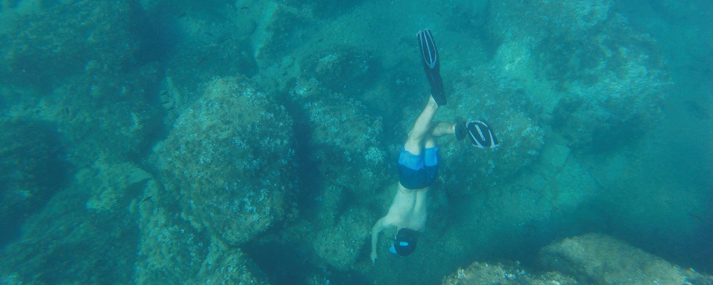

Oriol unraveled#
En catalàn tenemos un dicho muy conocido «\Xerrar pels descosits». Significa que alguien habla demasiado; vendría a ser «Hablar por los codos». «xerrar» significa hablar, y «descosit» es un descosido o jirón. Al mismo tiempo, en inglès el verbo «unravel» tiene dos acepciones: «desilachar» o «hacer fácil, libre de dificultad». Elegí el participio «unraveled» ya que si bien no suelo hablar demasiado, cuando se trata de hablar de estadística o programación a menudo termino hablando demasiado. Espero que este blog pueda ser un sitio donde «deshilachar» y esclarecer conceptos relacionados con la estadística y el programario libre, un sitio donde poder hablar por los codos en versión blog.
Prepararos para algunos juegos de palabras y vamos a ahondar en el programario libre y la estadística!

Proyectos#
El grueso de my trabajo actual está relacionado con dos librerías de programario libre lideradas por la comunidad: ArviZ y PyMC. Ambas tratan de modelización Bayesiana, pero tienen misiones distintas y complementarias.
El proyecto ArviZ provee al usuario de herramientas para el análisi exploratorio de modelos Bayesianos que no dependen de las librerías de inferencia ni de los lenguajes de programación usados.
Eso incluye visualización, diagnosticos de mostreo, comparación de modelos, resumenes estadísticos o verificación de modelos. El proyecto ArviZ mantiene varias librerías en Python y Julia.
El proyecto PyMC es un proyecto de programación probabilistica en Python. PyMC aspira a hacer la modelización Bayesiana tan simple y agradable como sea posible, permitiendo que los usuarios se centren en sus problemas reales en lugar de los métodos necesarios para resolverlos.
El proyecto PyMC mantiene la librería PyMC, el referente del proyecto, junto con una extensa documentación y otras librerías más pequeñas que complementan la librería PyMC. Además, también organiza actividades como PyMCon.
See the Projects page for a complete list of the projects I am involved in.
Support me#
Ko-Fi
Flexible donations, one time or recurrent
Account required
Debit or credit card, PayPal or Stripe available
LiberaPay
Recurrent donations only
Account required
Debit or credit card, PayPal or EURO bank transfer available
Buy Me a Coffee
One time donations only (at least for now)
No account required
Debit or credit card
See the Support me section for more ways to support my work.